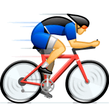

Prénom:Justine
Nom:Million-Brodaz
Boîte mail:justine.millionbrodaz@saintmichelannecy.fr
Telephone:0769190446
Bonjour et bienvenue sur mon portfolio
Je m'appelle Justine Million-Brodaz.Je suis née le 06/11/2004 à chambéry.
J'ai commencé mon éducation scolaire à l'école Waldeck Rousseau.
Ensuite j'ai fait un 1 ans au Bocage à Chambéry.
J'ai continué avec 2 ans au collège saint-françois de salle.
Puis j'ai fait 1 an et demi en Suisse.Pendant lequel j'ai fait
un stage chez Audemars Piguet et j'ai obtenu un prix de la perséverance
.Après de ma seconde et ma terminal j'ai passé ces années au Lycée vaugelas.
Pendant ces années j'ai participer à la nuit du code
Et pour finir 1 an en BUT à Annecy-Le-Vieux en Réseaux et Télécoms
Aujourd'hui je suis en BTS SIO1 à Saint-Michel à Annecy
J'adore la danse j'en fais depuis mes 5 ans
Je fais beaucoup de vélo avec mon papa
J'adore la musique